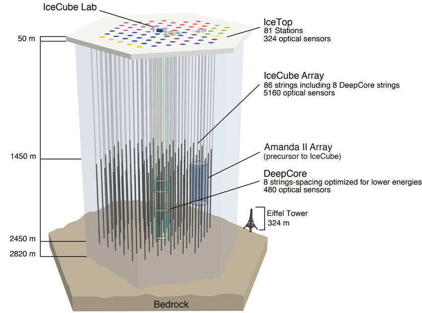

SCARLET · TeV–PeV
Neutrinos, antineutrinos
e inelasticidade
Structure-function model dependence of the inelasticity of TeV–PeV neutrino interactions and of neutrino–antineutrino separation in neutrino telescopes
Roteiro
Quatro partes
IceCube
O que o detector mede e como a composição entra na análise
DIS
Funções de estrutura e separação entre ν e ν̄
GENIE e SCARLET
Modelos, implementação e vínculos dos dados
Resultados
Deslocamentos da composição, origem cinemática e escala estatística
Pergunta central
Médias próximas, composições diferentes
Quanto muda a composição ν/ν̄ quando mudamos as distribuições de interação usadas no ajuste?
O deslocamento depende da diferença entre os templates e do poder de separação que resta.
I
Parte I
IceCube
Luz no gelo e composição de um fluxo sem medida da carga do lépton
O observatório
Um quilômetro cúbico de gelo instrumentado

5 160 módulos ópticos em 86 linhas.
Sensores entre 1 450 e 2 450 m de profundidade.
Partículas carregadas produzem luz Cherenkov. O tempo e a intensidade dos sinais permitem reconstruir o evento.
Interações de corrente carregada
A cascata e o múon dividem a energia
A cascata hadrônica recebe aproximadamente yEν. O múon recebe (1 − y)Eν.
O detector mede luz e reconstrói energias. A carga μ−/μ+ não fica disponível evento a evento.
Energia visível
Inelasticidade verdadeira e reconstruída
κ representa a resposta da cascata. A migração e a seleção entram no ajuste forward.
A medida que motiva o estudo
O IceCube já usa a inelasticidade
5
anos de eventos contidos
1–100 TeV
faixa aproximada da medida de inelasticidade
0,77
razão de fluxos relativa à previsão HKKMS, com +0,44/−0,25
A sensibilidade à razão atmosférica vem de 770 GeV–21 TeV.
Três grandezas distintas
Fração de interações, eventos e razão de fluxos
| Grandeza | Definição | O que entra |
|---|---|---|
| f | Fração de ν̄ nas interações CC | Distribuições verdadeiras em energia fixa |
| fev | Fração de ν̄ nos eventos selecionados | Fluxos, seções de choque e resposta |
| r | Escala sobre Φνμ/Φν̄μ do HKKMS | Ajuste conjunto com nuisances de fluxo |
Um deslocamento de f não se converte diretamente no mesmo deslocamento de r.
II
Parte II
DIS
As funções de estrutura determinam as distribuições que separam ν e ν̄
Cinemática
O domínio de Bjorken x e Q²
x mede a fração de momento do nucleon sondada na interação. Q² fixa a escala de resolução.
Seção de choque CC
F₂, FL e xF₃
× [F₂(1−y+y²/2) − FLy²/2 ± xF₃ y(1−y/2)]
O sinal de xF₃ muda entre ν e ν̄. Um FL positivo reduz a cauda de y alto.
Expressão sem massa do lépton e sem termos de massa do alvo. O cálculo usa as prescrições de cada configuração.
Modelo analítico de referência
Helicidade e forma em y
+ R(y − y²/2)
R = +1: distribuição plana.
R = −1: distribuição proporcional a (1 − y)².
Misturas
A composição depende dos templates
As duas distribuições aproximam-se com a energia. A mesma mudança de f passa a produzir uma alteração menor na forma.
Mecanismo do viés
A separação aparece no denominador
δν e δν̄ são os deslocamentos das médias verdadeiras em relação às médias dos templates.
Quando a separação cai, um pequeno erro de forma pode deslocar muito a composição. O ajuste completo usa toda a distribuição.
Descrição dipolar
O bóson flutua em um par de quarks
As funções de onda da corrente fixam o acoplamento ao par. A seção de choque dipolar descreve sua interação com o alvo.
BGK inclui evolução DGLAP do glúon. O trabalho usa um ajuste ao HERA e três prescrições de matching.
Matching da contribuição de mar
Uma janela entre duas descrições
w = 1 − t²(3 − 2t)
t = ln(x/0,01)/ln(10)
Abaixo de x = 0,01, a parte dipolar. Acima de x = 0,1, a descrição convencional.
Tier 1 preserva a forma dipolar na janela. Tier 2 testa o blend e a forma convencional.
III
Parte III
GENIE e SCARLET
Uma implementação comum para comparar funções de estrutura e inferência
Arquitetura
O que cabe ao GENIE e ao SCARLET
| Camada | Função |
|---|---|
| GENIE R-3_06_02 | Canais, cinemática e infraestrutura de geração de eventos |
| SCARLET · scarlet_physics | Funções de onda, dipolos e funções de estrutura |
| SCARLET · scarlet_genie | Adaptadores para os algoritmos de DIS e charm do GENIE |
| SCARLET · análise | Integrações, templates, controles e ajustes de composição |
GENIE permanece como dependência. Os adaptadores substituem algoritmos por configuração.
Configurações
Uma referência e três dipolos
| Modelo | Construção | Estatuto |
|---|---|---|
| HEDIS / NLO | HERAPDF1.5 + APFEL | Referência externa |
| Tier 1 | BGK + subtração de valência + forma dipolar | Admitido pelo critério relativo |
| Tier 2 | Mesmo BGK, blend e forma convencional | Variações que falham no pull |
| Bodek–Yang | Funções de estrutura convencionais do GENIE | Comparação separada |
“Família” inclui NLO e os três dipolos. Bodek–Yang fica fora dela.
Alcance dos dados
Os dados restringem outras escalas
| Conjunto | x | Q² (GeV²) | Papel |
|---|---|---|---|
| HERA | ≤ 0.01 | ≤ 650 | Ajuste do dipolo |
| NuTeV | 0.015, 0.045, 0.08 | 1–48 | Discriminação entre candidatos |
| Previsões TeV–PeV | Várias regiões | ~10²–10⁴ | Evolução e matching |
A previsão exige extrapolação das entradas ajustadas. O estudo mede diferenças entre essas prescrições.
Seleção e histórico
O Tier 1 passa por margem estreita
| NuTeV | χ²/N (x ≤ 0.1 / todo x) | Maior pull |
|---|---|---|
| Bodek–Yang | 2.18 / 2.29 | −5.5σ |
| Tier 1 | 1.67 / 1.68 | −2.77σ |
| Tier 1 sem 1,032 | — | −4.1σ |
| Tier 1 sem radiação | — | −4.3σ |
O critério foi revisto com resultados já conhecidos. O fator 1,032 entrou nessa revisão.
Referência NLO
HEDIS permanece uma referência externa
| Variante HEDIS | NuTeV χ²/N | CCFR χ²/N |
|---|---|---|
| Nominal | 2.54 / 2.87 | 5.23 / 3.85 |
| × 1.032 | 2.72 / 3.06 | 5.23 / 3.85 |
| Fator de ferro | 2.90 / 3.00 | 2.43 / 2.29 |
| Ferro × 1,032 | 3.09 / 3.20 | 2.43 / 2.29 |
O fator nuclear melhora CCFR e piora NuTeV. A falha no critério NuTeV persiste em todas as variantes.
Tratamento de charm
Um propagador invertido em G18
O efeito na seção de choque é ≤ 0,4% até 1 TeV, mas cresce ao extrapolar G18. HEDIS não usa esse modelo.
As comparações usam charm consistente com as funções de estrutura de cada configuração.
IV
Parte IV
Resultados
Formas próximas, perda de separação e deslocamentos da composição
Distribuição em x e Q²
O domínio cinemático muda com a energia
Tier 1, νμ, água. Fração da seção de choque por célula de 0,25 × 0,25 décadas.
x < 0,01: de 3,1% a 55% entre 1 TeV e 1 PeV.
O mapa de ocupação não isola o efeito de saturação.
Poder de separação
Δ⟨y⟩ cai de 0,12 para 0,008
A diferença ν–ν̄ diminui muito mais que a diferença entre as médias dos modelos.
Na família, as médias diferem por cerca de 0,005 no máximo.
Linhas contínuas: ν.
Tracejadas: ν̄.
Ajuste das formas
Pequenas diferenças deslocam a fração
Templates de A ajustados à mistura esperada de B.
Máximo sobre pares ordenados e f = 0,15–0,50, com 20 bins em y.
O ajuste físico usa 0 ≤ f ≤ 1. Os grandes desvios em alta energia acompanham a perda de informação.
Identificabilidade
Um viés grande pode passar sem mau ajuste
2,4
σf√N a 1 TeV
31
σf√N a 1 PeV
≤ 1,2
deviance para 18 graus de liberdade, na exposição Nbias
Na exposição em que |δf| iguala o erro estatístico, a qualidade do ajuste pode não revelar o deslocamento.
Controles de implementação
Alvos e cortes comuns
| E (TeV) | Nominal | Nucleons livres | + W > 2 GeV | + Q² > 1 GeV² |
|---|---|---|---|---|
| 1 | 0.026 | 0.021 | 0.030 | 0.023 |
| 3 | 0.026 | 0.019 | 0.021 | 0.017 |
| 100 | 0.065 | 0.049 | 0.049 | 0.048 |
| 1000 | 0.438 | 0.318 | 0.318 | 0.317 |
Máximo |δf|, Tier 1–NLO. Cortes pesam em baixa energia. O tratamento nuclear explica parte da diferença em alta energia.
Decomposição por região
Contribuições em x podem se cancelar
Comparação fixa: templates NLO ajustados à mistura Tier 1, com f = 0,25.
Até 30 TeV: |δf| ≤ 0,019 e cancelamentos.
Matching domina a 100 TeV. x < 0,01 domina a partir de 300 TeV.
Confronto observacional
A medida atual não distingue os modelos
Todas as previsões ficam dentro de 0,6 vezes o semi-intervalo de 68% do IceCube.
Diferenças em relação à referência: ≤ 0,004 na família e ≤ 0,011 para Bodek–Yang.
O gráfico mostra os cinco bins de energia visível.
Validação da comparação
O ajuste forward preserva o resultado
| Teste | Resultado |
|---|---|
| 5 modelos, 11 respostas, Asimov | FF − E1 = −0.003 … +0.004 |
| Mudança das diferenças entre modelos | ≤ 0.0006 |
| 300 pseudo-experimentos por modelo, bins 1–4 | Viés ≤ 0,001 |
| Bin aberto, ~8 eventos | Viés até 0,014; ~50% nos limites |
A resposta real do IceCube permanece fora do teste.
Nível de detector
O ajuste inclui fluxo e resposta
Fluxos atmosférico e astrofísico, veto, absorção na Terra, resolução de energia e seleção de tracks.
A aceitação foi calibrada nas contagens do IceCube após uma primeira rodada Asimov que já mostrava os vieses.
A calibração muda os deslocamentos em menos de 0,01 em r.
Razão de fluxos
Deslocamentos de 8% e até 18%
| Verdade ← templates | δr | Parte de forma |
|---|---|---|
| NLO ← Tier 1 | −0.056 | −0.025 |
| Tier 1 ← NLO | +0.065 | +0.030 |
| NLO ← Tier 2 conv. | −0.107 | −0.081 |
| Tier 2 conv. ← NLO | +0.139 | +0.103 |
| NLO ← Bodek–Yang | +0.033 | +0.091 |
Asimov, r = 0,77. Tier 1–NLO: aproximadamente metade da forma e metade das seções de choque e absorção.
Escala estatística
A exposição torna a diferença relevante
O erro é assimétrico. A comparação usa o semi-intervalo do ajuste enviesado do lado do valor verdadeiro.
×10 mantém a mesma resposta. Não é uma previsão específica para o Gen2.
Validação do ajuste
Closure e cobertura têm escopos distintos
| Diagnóstico | ×1 | ×10 |
|---|---|---|
| Estimador r̂ | Viés para cima de 6–10% | Diagnóstico em ρ = ln r |
| Closure em ρ | Falha; |viés| ≤ 0,035 | 0 falhas em 65 testes |
| Cobertura de perfil | Não avaliada | 68.30 ± 0.23% / 95.01 ± 0.11% |
ρ = ln r foi adotado após a falha. A transformação preserva o máximo e mapeia o intervalo.
Limites da interpretação
O que os resultados estabelecem
Diferenças entre prescrições
A família é finita e compartilha entradas. Seu envelope não tem cobertura probabilística.
Configurações completas no detector
Os efeitos nucleares e de normalização ainda não foram separados nesse nível.
Inferência em um proxy
Os testes não demonstram viés na medida do IceCube nem validam a resposta real.
Conclusões
A composição exige testar as distribuições
Médias próximas não garantem que a composição inferida seja estável.
0,12 → 0,008
queda da separação ν–ν̄
8–18%
deslocamento de r na família, no proxy
0,8–1,6
vezes o erro de perfil em ×10
Fontes e créditos
Referências e dados
Este trabalho
R. C. R. de Lima e B. D. S. Moreira
Structure-function model dependence of the inelasticity of TeV–PeV neutrino interactions and of neutrino–antineutrino separation in neutrino telescopes
Manuscrito em preparação, versão de 30/10/2026.
IceCube
Phys. Rev. D 99 (2019) 032004
arXiv:1808.07629
icecube.wisc.edu/science/icecube
Modelos
CSMS: JHEP 08 (2011) 042
BGK: Phys. Rev. D 66 (2002) 014001
GENIE e HEDIS: referências do manuscrito.
Imagens e números
IceCube Lab: John Hardin, CC BY 4.0.
Detector: K. Andeen e M. Plum, CC BY 4.0.
Gráficos do estudo: saídas SCARLET, com proveniência em assets/data-sources.json.
SCARLET · TeV–PeV
Perguntas?
Inelasticidade, composição e dependência das funções de estrutura